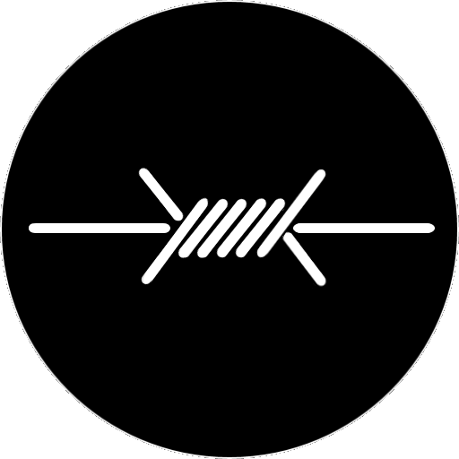
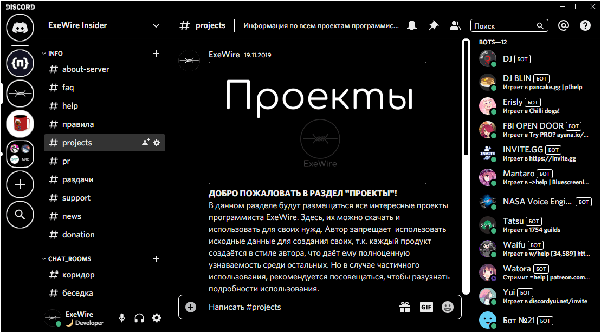
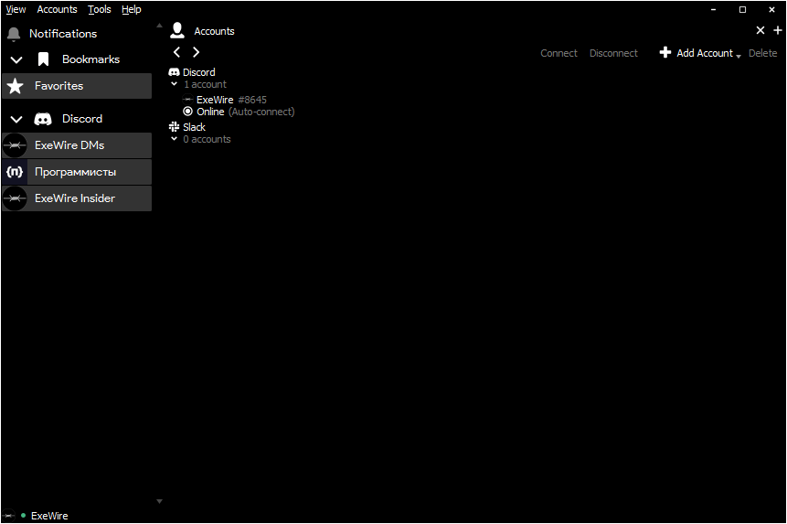
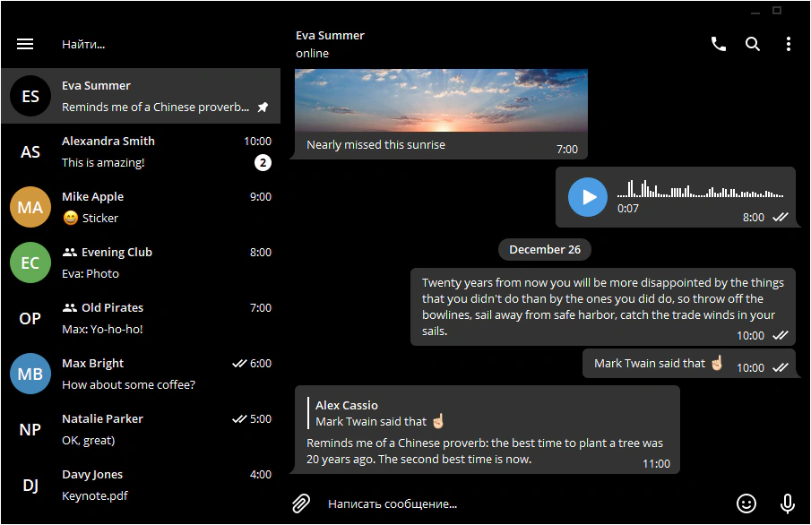
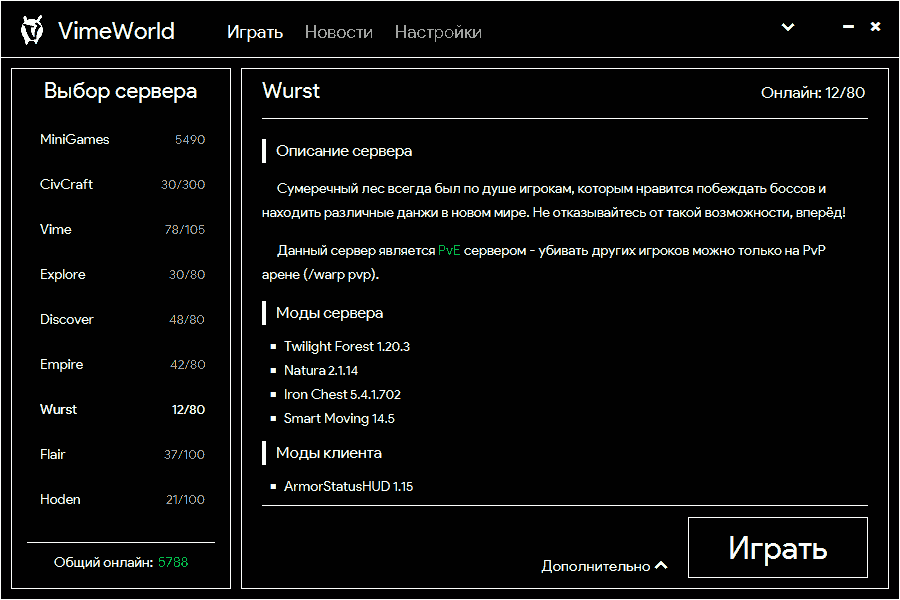
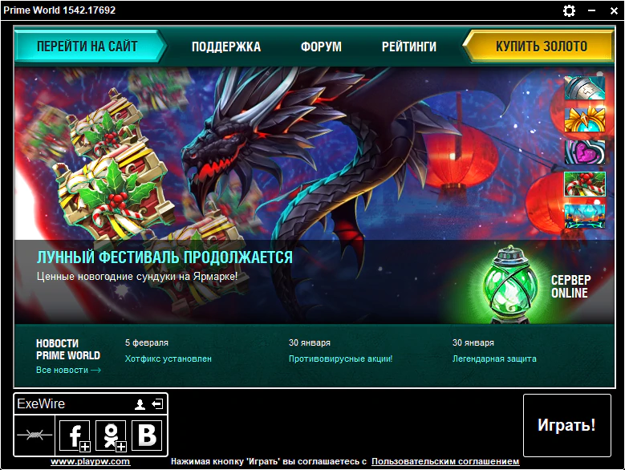

Чёрные темы для приложений.
Здесь, вы сможете скачать темы для других приложений и инструкция для их установки.
Здесь, вы сможете скачать темы для других приложений и инструкция для их установки.
Когда я перешёл в Дискорд, я даже не подозревал, что есть такой плагин, как BetterDiscord для кастомизации клиента Discord. Позже, я доработал тему и предлагаю ознакомиться с ней. ИНСТРУКЦИЯ: сначала установите BetterDiscord, перейдя по кнопке. После открытия в Discord плагина, закройте Discord и зайдите в папку "AppData/Roaming/BetterDiscord/themes" и закиньте туда файл, который вы скачаете через другую кнопку.
После, меня познакомили с клиентом Discord - Ripcord. Он не использует Electron и весит очень мало, 30 МБ и оперативной памяти использует столько же! Для неё также нашлась чёрная тема, которую я и написал! ИНСТРУКЦИЯ: просто закиньте файлик в корень программы. - в ту же папку, где она и располагается.
В прошлом году, Телеграм разрешил перекрашивать их клиент. Я немного не понимаю, почему некоторые элементы перекрашиваются правильно, а другие - нет! Надеюсь на исправление клиента, ибо моя тема не полностью готова из-за этого. ИНСТРУКЦИЯ: просто перейдите по ссылке при запущенном Телеграме.
Как бы вы ненавидели Майнкрафт, а она захватила миллионы детских умов своей простотой и уникальным открытым миром. Есть клиент VimeWorld. Он имеет HTML-начинку. Я быстренько накидал кода и клиент теперь выглядит чище с моей чёрной темой!
Друг показал игру Prime World и она мне понравилась. Клиент также имеет HTML-начинку, поэтому, мне было легко перекрасить в чёрный! ИНСТРУКЦИЯ: распаковать архив и заменить папку в игре.
